8 Session 8: Machine Learning Foundations & Practical PyTorch
Sources for this page: d2l.ai, Dive into Deep Learning, Softmax Regression, Generalization in Classification and Builders’ Guide (nn.Module) — CC BY-SA 4.0; Wikipedia, Training, validation, and test data sets, Supervised learning, Regression analysis, Statistical classification, Logistic regression, Leakage (machine learning), Confusion matrix, Matthews correlation coefficient, Receiver operating characteristic, Activation function — CC BY-SA 4.0; UniProt, Subcellular location — CC BY 4.0; EBI’s PDBe API for the helix-fraction data; Steinegger & Söding (2017), MMseqs2, Nature Biotechnology 35:1026-1028, for sequence clustering. The 3×3 pattern-recognition example, the classifier-evaluation material, and the emphasis on homology reduction of training sets draw on ideas from Magnus Ekman’s Learning Deep Learning (ch. 2, ch. 4 and Appendix A slide decks in slides/, the ch. 4 deck bundling Olof Emanuelsson’s “Neural Networks in bioinformatics” slides). That book is copyrighted and not openly licensed, so it is credited here as an internal source and not linked as further reading. All figures on this page were drawn or computed for this course. Every number was computed in code and read back from the notebook’s output.
Notebook: Session 8 — Machine Learning Foundations & Practical PyTorch, in code — the code behind this page. Download it to run it yourself.
8.1 Learning goals
By the end of this session you should be able to:
- explain what training, validation and test sets are for, and why performance on the training data says little about a model;
- name the ways information can leak from the test data into a model (through the samples, the preprocessing or the model choices), homologous sequences above all;
- compute and interpret a confusion matrix, precision, recall, F1, MCC and ROC/AUROC for a classifier, and RMSE, Pearson \(r\) and \(R^2\) for a regression model, and explain what each of them does and does not tell you;
- tell regression from classification, and choose the output, loss and evaluation metric that go with each;
- write (not yet train) a PyTorch
nn.Moduleclassifier and count its parameters.
Session 7 asked what a model can represent. This session asks the question that matters in practice: how do we know whether a model has learned anything useful?
The session has three parts. Section 8.2 poses the problem: is it regression or classification? Section 8.3, the heart of the session, is about evaluation and generalisation. Section 8.4 builds the bridge to Session 9, with activation functions, softmax and a PyTorch model. A tiny 3×3-pixel pattern problem runs through all three parts as a toy example, and a real protein-localisation dataset carries the biology.
8.2 Posing the problem
8.2.1 Supervised and unsupervised learning
Before choosing a model, we need to know what kind of learning problem we have. Machine learning distinguishes two kinds of learning.
- Supervised learning fits a model to labelled examples, where the correct answer for each input is already known, so that it can predict the label of new inputs. An example is a perceptron trained on known binding and non-binding sites (Session 7).
- Unsupervised learning finds structure in data without labels, for example by clustering sequences into families, or by projecting expression profiles with PCA. The MMseqs2 clustering in Section 8.3 is an unsupervised example.
A PSSM (Session 5) sits in between, because it is estimated by counting residues in an alignment of family members rather than fitted to labelled positive and negative examples. Both kinds of learning are useful, but almost everything we train in this course is supervised, so that is what we focus on.
8.2.2 Regression vs. classification
Within supervised learning, the kind of problem is decided by the label:
- in regression, the label is a number;
- in classification, the label is one of a fixed set of categories.
| Regression (predict a number) | Classification (predict a category) |
|---|---|
| Fraction of residues in helices (below) | Subcellular compartment: 5 classes (below) |
| Protein melting temperature, or stability change \(\Delta\Delta G\) of a mutation | Is this mutation pathogenic or benign? |
| mRNA expression level in a tissue | Does this protein have a signal peptide? (Session 11) |
| Binding affinity (pKd) of a drug to a target | Helix / strand / coil for each residue (Session 7, Session 9) |
| Relative solvent accessibility of a residue (0-1) | Is this residue buried or exposed? |
The last row shows that the same biology can often be posed either way. Setting a threshold on a continuous quantity turns regression into classification, which makes the problem easier but throws information away.
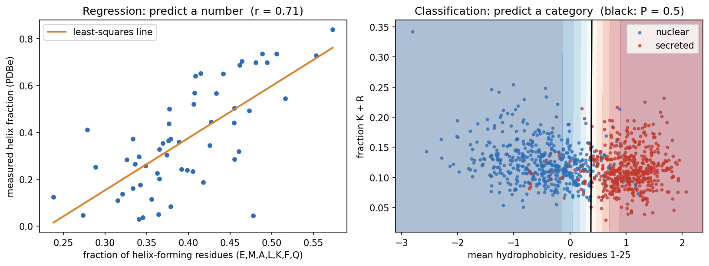
What is a signal peptide? Proteins are made in the cytoplasm, but many must work elsewhere: outside the cell, in a membrane, or in an organelle of the secretory pathway. Most of them carry this address at their N-terminus as a signal peptide, typically 15-30 residues with a hydrophobic core. It sends the new chain into the endoplasmic reticulum (in bacteria, across the inner membrane), and it is then cut off. Session 4 shows its sequence motif, and Session 11 its role in the history of deep learning.
Predicting signal peptides is one of the oldest problems in bioinformatics, and its early history is a short course in this session’s theme (Nielsen, Tsirigos, Brunak & von Heijne 2019, Protein J. 38:200):
- The first cleavage-site rule (von Heijne 1983) placed 92% of cleavage sites correctly in the 78 signal peptides used to build it, but only 64% in a larger set a few years later. Even a simple method can be overfitted if the data are few.
- The first signal-peptide predictor (McGeoch 1985, Virus Res. 3:271) used two features much like ours: the length of the uncharged stretch near the N-terminus and the maximal hydrophobicity. The boundary between the classes was drawn by hand in that two-dimensional plane, so it could not simply be refitted to new data.
- The first neural network (Ladunga et al. 1991, Bioinformatics 7:485) added hidden units until it classified every training protein correctly, and then performed poorly on new proteins.
Our classifier does what McGeoch did by hand, but it learns the boundary from data and we test it on proteins it has not seen. It tells a biological story. It gives N-terminal hydrophobicity a weight of 4.26 and K+R content a weight of only −0.20, so it found the hydrophobic core of the signal peptide almost on its own. On held-out proteins it is right 93.5% of the time, from just two numbers per protein:
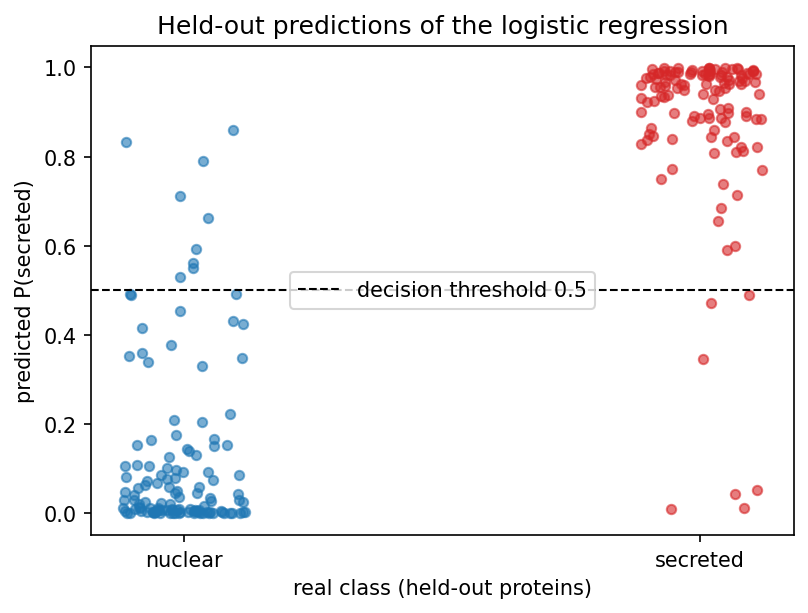
8.2.2.1 Logistic regression: the bridge between the two
Logistic regression computes the same weighted sum as Session 7’s perceptron, \(z = w_1x_1 + w_2x_2 + b\). Instead of a hard step, it passes \(z\) through the sigmoid function:
\[ \sigma(z) = \frac{1}{1+e^{-z}}, \]
which maps any number to a value between 0 and 1. Despite its name, logistic regression is a classifier. Because it is fitted with the log-loss (cross-entropy), its output can be read as an estimate of \(P(\text{secreted} \mid x)\). In the notebook, for example, one nuclear protein gets 0.008 and one secreted protein 0.980. Whether such estimates are well calibrated, meaning that a predicted 0.8 is right 80% of the time, is a separate question that has to be checked on held-out data. It is important to keep two things apart. The sigmoid is just a mathematical mapping into the range 0-1, whereas logistic regression is a probabilistic model, fitted with the likelihood (cross-entropy) of the labels. Only the second makes the output an estimate of a probability, and a sigmoid applied to an arbitrary score does not.
The decision boundary (\(\sigma(z) = 0.5\), i.e. \(z = 0\)) is still the perceptron’s straight line. What changes is that the output is now smooth and differentiable, which is what Session 9’s training needs.
Once the problem type is chosen, three things downstream follow from it:
| Regression | Classification | |
|---|---|---|
| Output unit | linear (no activation) | sigmoid (2 classes) / softmax (\(K\) classes) |
| Loss minimised in training (Session 9) | mean squared error | cross-entropy (Session 1) |
| Evaluation metrics (Section 8.3) | RMSE, Pearson \(r\), \(R^2\) | confusion matrix, precision, recall, F1, MCC, AUROC |
8.2.3 A running toy example: 3×3 pixel patterns
Deep learning had its first great breakthrough in image classification (Session 10), where a computer learns whether an image contains a cat, a house, and so on. To see how a classifier is evaluated, we play here with the smallest image-classification problem worth the name. Each image has nine pixels on a continuous scale (dark = +1, light = −1), and there are five classes: horizontal, vertical, diagonal, anti-diagonal and cross. Every example is a clean pattern plus random noise on each pixel (Gaussian, σ = 0.8). “Cross” shares its middle row with “horizontal” and its middle column with “vertical”, so we can expect some confusion there.
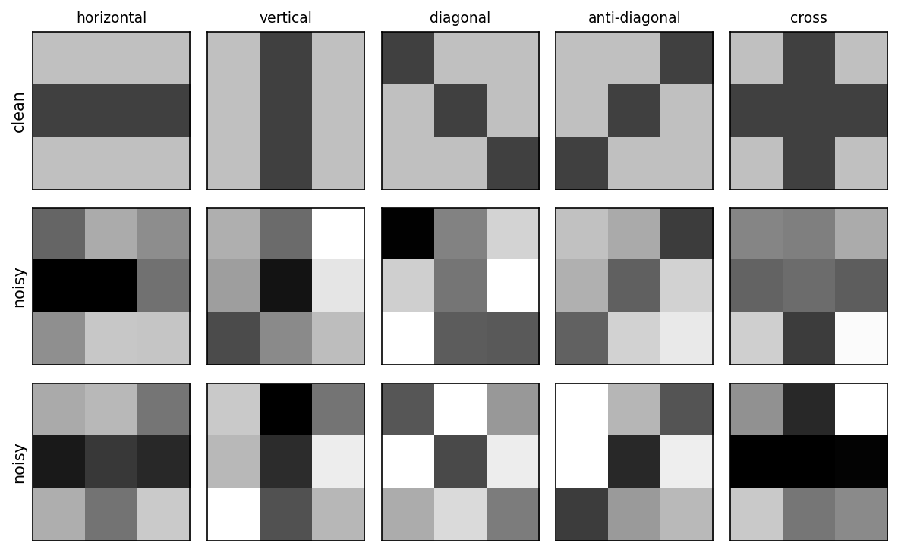
The classifier is five Session 7 perceptrons, one per pattern. Each is trained to output +1 for its own pattern and −1 for every other, and the predicted class is whichever perceptron gives the highest score. This is called one-vs-rest. There is no hidden layer, so nothing here needs backpropagation. Section 8.3 uses this model to show what the three data sets are for and what the evaluation metrics mean.
8.2.3.1 Further reading
- Wikipedia, Supervised learning, Regression analysis, Statistical classification
- Wikipedia, Logistic regression
- Wikipedia, Chou-Fasman method (helix propensities) and Hydrophilicity plot (Kyte-Doolittle scale)
- d2l.ai, Linear Regression
8.3 How do we know a model learned anything? Evaluation and generalisation
8.3.1 Why three data sets?
A model is only useful if it works on data it has not seen. Its performance on the training data says little, because a flexible enough model can memorise every training example. A model that predicts its training data accurately but fails on new examples is said to overfit. The labelled data are therefore split three ways. This is not always done in practice, but it should be:
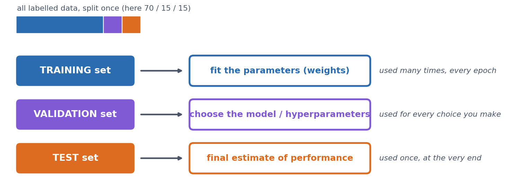
- Training set: used to fit the weights.
- Validation set: used to make choices, such as how long to train, how large a network to use, or which features to include. Every choice tuned on it makes it slightly optimistic.
- Test set: looked at once, at the very end, to report the final number. If you go back and change the model after looking at the test set, it has become a second validation set and no longer gives an honest estimate.
On the 3×3 problem. We draw 100 training, 100 validation and 200 test examples, and first measure the model by its accuracy, the fraction of examples, over all five classes, that it classifies correctly. (The next section breaks this single number down.) The one choice to make is how many epochs (passes through the training set) to train for, and we make it on the validation set. If we train for 50 epochs and record both accuracies after every epoch, we get this picture (the notebook computes every number and draws the figure):
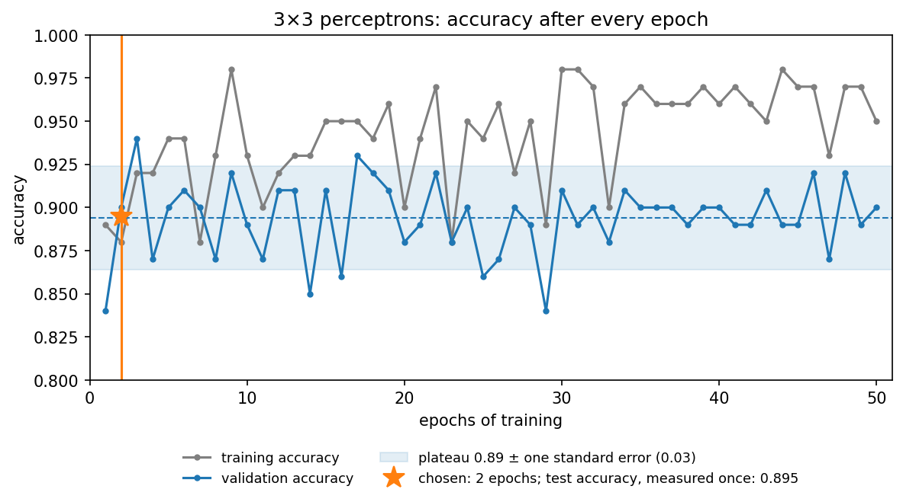
The figure shows three things:
- Training accuracy never settles. It moves between 0.88 and 0.98. The noisy, overlapping patterns cannot all be separated by straight lines, so the perceptron rule keeps changing the weights for every example it gets wrong. High training accuracy is not the goal, because the model is judged on data it has not seen.
- Validation accuracy is noisy. After the first epoch it moves around a plateau of about 0.89, between 0.84 and 0.94. With only 100 validation examples, one accuracy value is uncertain by about ±0.03 (its standard error, \(\sqrt{p(1-p)/n}\)), so most of the epoch-to-epoch movement is noise. After about 30 epochs, training accuracy is clearly higher than validation accuracy, which is the first sign of overfitting.
- Choosing the single best epoch is optimistic. Epoch 3 happens to reach 0.94, but picking the maximum of 50 noisy numbers partly picks luck. This is selection bias. Choosing the maximum of many noisy validation scores makes the reported validation performance optimistic, so the chosen model’s validation accuracy overstates how well it will do. (Making choices on the validation set is what it is for. The bias lies in reporting the best score as the expected one.) Tuning many choices on the same validation set can, in the end, overfit the validation set too. We therefore use the earliest epoch that has clearly reached the validation plateau, rather than chasing the highest noisy value, which gives 2 epochs (0.90).
The model trained for two epochs is then measured once on the test set, giving 0.895, in line with the plateau. But is that good? Accuracy alone can mislead, in particular when the classes are unbalanced, and that is the topic of the next section.
8.3.2 Evaluating a classifier
Accuracy is a single number, and it hides which mistakes are made. The confusion matrix shows them, because it cross-tabulates the true class (rows) against the predicted class (columns).
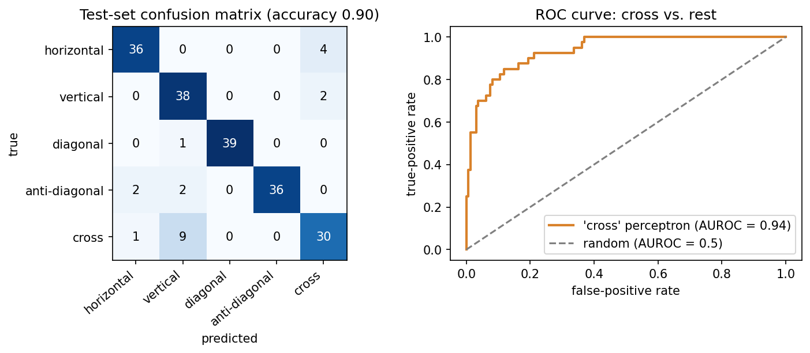
For any classification task, even one with many classes, we can treat one class as “positive” and all the others together as “negative”. Every prediction is then a true or false positive (TP, FP) or a true or false negative (TN, FN). From these four counts we can define several useful measures, which are worth remembering:
\[ \text{precision} = \frac{TP}{TP+FP} \qquad \text{recall} = \frac{TP}{TP+FN} \]
- Precision asks: of the proteins I called positive, how many really are?
- Recall (sensitivity) asks: of the true positives, how many did I find?
The same four counts give two more measures, which the ROC curve below needs. The true-positive rate is recall under another name,
\[ \text{TPR} = \frac{TP}{TP+FN} = \text{recall} \qquad \text{FPR} = \frac{FP}{FP+TN} \]
and the false-positive rate is its mirror image on the other row: of the proteins that really are negative, how many did I wrongly call positive? What separates these measures is simply which total you divide by. Precision divides by what the model called positive, so it is read down a column of the confusion matrix, while recall and FPR divide by what the truth says, so they are read across a row.
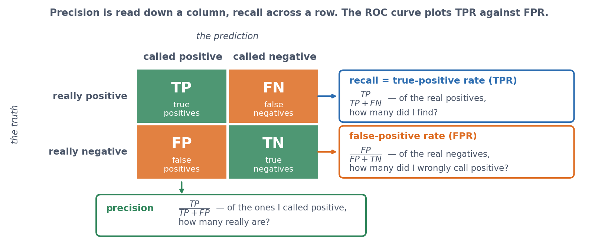
Wikipedia’s Precision and recall lists every measure that can be built from these four counts, with the other names each one goes by in medicine and in machine learning. You do not need them all, but you will meet them in papers.
For “vertical” on the 3×3 test set, recall is 0.95 but precision only 0.76, because many crosses were called vertical. For “cross”, recall drops to 0.75. There is always a trade-off between precision and recall, and the application decides which matters more. In a screening application, such as flagging potentially pathogenic variants for follow-up, you would favour recall. When each positive call triggers an expensive experiment, you would favour precision.
Two measures combine these counts into a single number. \(F_1\) balances precision and recall:
\[ F_1 = \frac{2\cdot\text{precision}\cdot\text{recall}}{\text{precision}+\text{recall}} \]
The Matthews correlation coefficient uses all four counts:
\[ \text{MCC} = \frac{TP\cdot TN - FP\cdot FN}{\sqrt{(TP+FP)(TP+FN)(TN+FP)(TN+FN)}} \]
MCC runs from \(-1\) (perfect disagreement: every prediction inverted) through \(0\) (no better than chance) to \(+1\) (perfect), and it stays honest when the classes are unbalanced (see below). The formula above is for two classes. For problems with more classes, software such as scikit-learn uses a generalisation that works on the whole confusion matrix. Over all five 3×3 classes, that multi-class MCC is 0.871. \(F_1\) and AUROC have no such generalisation, so with several classes we compute each one separately, taking one class as positive and the rest as negative, and then average over the classes. That is what \(F_1\) and AUROC mean in every results table from here on.
8.3.2.1 ROC curves
Most classifiers output a score, and a threshold turns it into a yes/no call. Lowering the threshold finds more true positives but also lets through more false positives, and raising it does the opposite. Choosing one cutoff is somewhat arbitrary, so it is often better to look at all thresholds at once. The ROC curve does this by plotting the true-positive rate against the false-positive rate, both defined above, as the threshold sweeps across all values. To turn the curve into a single number, we use the area under it, AUROC. This is the probability that a random positive gets a higher score than a random negative, so it is 0.5 for guessing and 1.0 for a perfect ranking. For the “cross” perceptron above, AUROC is 0.938. The same reasoning lies behind Session 5’s choice of an E-value cutoff, where you also pick a point on this trade-off.
8.3.3 Evaluating a regression model
A regression prediction is not simply right or wrong, but more or less off, so it needs other measures. For the helix-content example, we fit the line on 41 proteins and hold out the other 14:
- RMSE \(= \sqrt{\tfrac1n \sum (y_i - \hat y_i)^2}\) is 0.159, in the target’s own units (fraction helix). Predicting the training-set mean for every protein gives 0.234, which is the baseline to beat.
- Pearson \(r\) between predicted and measured values is 0.760.
- \(R^2\) \(= 1 - \sum (y_i-\hat y_i)^2 / \sum (y_i - \bar y)^2\) is 0.526, so about half of the variance is explained. \(R^2 = 0\) means no better than predicting the mean.
The three numbers answer different questions:
- RMSE: how numerically wrong are the predictions, in the target’s units?
- Pearson \(r\): do the predictions follow the ordering and linear trend of the truth?
- \(R^2\): how much better are the predictions than always predicting the mean?
They can disagree sharply. A systematically biased predictor, for example one that outputs \(2\hat y + 0.3\) instead of \(\hat y\), keeps exactly the same correlation (\(r = 0.760\)), because the ordering is unchanged. But its RMSE rises from 0.159 to 0.639, and its \(R^2\) falls to \(-6.67\), far worse than predicting the mean. A high correlation is therefore not the same as accurate prediction, and treating it as such is one of the most common mistakes in bioinformatics papers.
Why we need held-out data, in one picture. A model that is flexible enough can simply memorise its training data. A 1-nearest-neighbour model is the extreme case, because it predicts the helix fraction of the most similar protein (by amino-acid composition) that it was trained on. If we train it on all 55 proteins and evaluate it on the same 55, every protein’s nearest neighbour is itself, so the predictions are perfect (\(R^2 = 1.00\), RMSE \(= 0\)). If we train it on 41 proteins and evaluate it on the other 14, it is no better than predicting the mean (\(R^2 = 0.03\)):
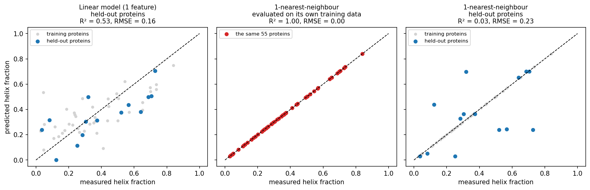
The middle panel is what you get if you evaluate on the training data, and it says nothing about new proteins. With only 14 test proteins, however, all of these numbers are themselves uncertain, which leads to the next question.
8.3.4 How much can you trust one split?
To answer it, we turn to a real, though still small, problem: predicting subcellular localisation. The dataset comes from reviewed human UniProt entries (Session 3) with exactly one annotated location. We use five classes (cytoplasm, nucleus, mitochondrion, secreted, cell membrane) and leave out all others (peroxisome, Golgi, ER, and so on). Each sequence is one-hot encoded (Session 7) over its first 150 residues, because localisation signals are mostly N-terminal, which gives 150 × 20 = 3000 input numbers per protein.
Class imbalance first. The real class sizes are 864 cytoplasmic, 1316 nuclear, 220 mitochondrial, 924 secreted and 1146 cell-membrane proteins: 4470 in all, with six times as many nuclear as mitochondrial. To keep the lab’s download small, the notebook asks UniProt for only the first 500 hits per class, of which 424, 497, 140, 488 and 338 survive the single-location filter. That cap therefore understates the imbalance, since it bites hardest on the classes that are largest. Even so, a “classifier” that always answers nucleus reaches an accuracy of 0.263 on the capped sample, above the 0.20 you might expect for five classes, while its MCC is exactly 0. Real proteomes are far more unbalanced still. In a genome-wide screen for, say, a rare targeting signal, “always no” can be more than 90% accurate. You should therefore always report MCC, or precision and recall, alongside accuracy, and be sceptical of papers that do not. Here we avoid the problem by balancing every class to 140 proteins (700 in total).
Split-to-split noise. A quick logistic-regression baseline, refitted on ten different random 70/15/15 splits, gives validation accuracies from 0.505 to 0.610 (mean 0.561, standard deviation 0.031). The data and the model are the same, and only the random draw of the split differs. k-fold cross-validation makes better use of limited data and reduces the dependence on one particular split, although it does not remove sampling variability. The data are cut into \(k\) class-stratified folds, the model is trained \(k\) times with a different fold held out each time, and the results are averaged. With \(k = 5\) the notebook gets 0.540 ± 0.044. Every protein is used for validation exactly once, at \(k\) times the computing cost.
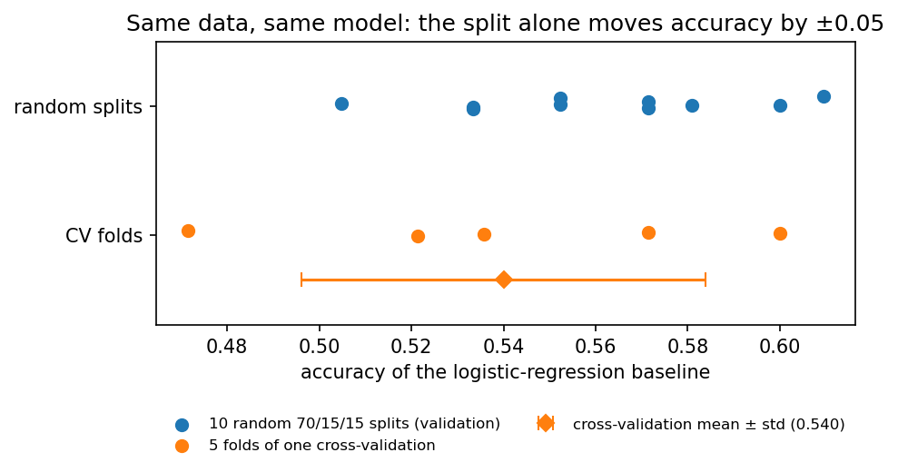
8.3.5 The biological trap: homologs on both sides of the split
A random split assumes that the examples are independent. Proteins are not. They come in families of homologs (Session 4) that share sequence and, often, structure, localisation and function. Suppose one family member is in the training set and another in the test set. The model can then exploit family-specific sequence similarity rather than relying only on general targeting signals. The test set then partly rewards recognising known families instead of measuring generalisation to new kinds of proteins.
This effect can be measured. Clustering the 700 proteins with MMseqs2 (a fast, BLAST-like search that groups sequences above an identity cutoff) at 30% identity gives 551 clusters. 75 clusters have more than one member, holding 224 proteins in total, and the largest has 11. Over the same ten random splits:
- 31.3% of validation proteins have a ≥30%-identity homolog in the training set;
- the baseline classifies those correctly 67.5% of the time;
- it classifies the remaining proteins correctly only 50.9% of the time.
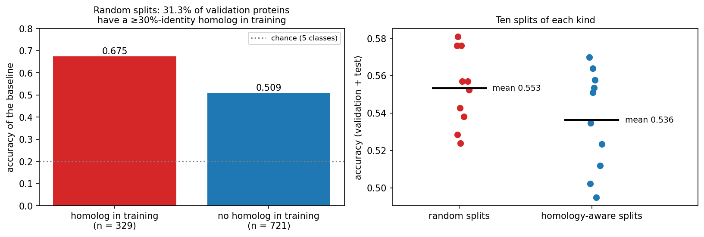
The fix is homology partitioning. We cluster first and then put whole clusters into training, validation or test, so that no cluster of sequences with ≥30% identity crosses the split. This substantially reduces homology leakage, although it cannot guarantee that no remote homolog below the cutoff remains. Averaged over ten splits of each kind, baseline accuracy drops from 0.553 (random) to 0.536 (homology-aware). The overall drop is small here only because 476 of the 700 proteins have no homolog in the set at all. In more redundant data, such as a whole proteome or the PDB with its thousands of near-identical structures of popular proteins, the gap can be much larger. From this session on, the course uses the homology-aware split (486 training / 105 validation / 109 test proteins), and Sessions 9 and 10 reuse it.
8.3.5.1 Other ways biological data leaks
Homology is the classic trap, but not the only one. Information from the test data can leak into a model in three ways: through the samples (homologs or samples from the same patient on both sides of the split), through the preprocessing (normalising or selecting features using all the data), and through the evaluation (repeatedly inspecting the test set while choosing models). Using the validation set to choose a model is not leakage, because that is what it is for. The common pattern is that something shared between the training and test examples, other than the signal you want to learn, lets the model cheat.
- Several samples from one individual. Split by patient, not by sample. Otherwise the model learns to recognise the patient.
- Batch effects. If all tumour samples were sequenced in one lab and all controls in another, a model can learn the lab. Keep batches balanced across classes, or split by batch.
- Preprocessing on the full dataset. Normalising, selecting features or running PCA on all data before splitting lets test-set information in. Fit preprocessing on the training set only.
- Time. A model tested on proteins annotated before its training data may benefit from later annotations that were themselves predicted by similar tools. CASP (Session 6) avoids all of this by testing on structures that are unpublished at prediction time. This truly blind test is the model for honest evaluation.
- Unrepresentative data. Swiss-Prot over-represents well-studied proteins and model organisms. A model trained on human proteins may not transfer to bacteria. The training set should look like the data the model will be used on.
8.3.5.2 Further reading
- Wikipedia, Training, validation, and test data sets, Cross-validation (statistics), Leakage (machine learning), Batch effect
- Wikipedia, Confusion matrix, Precision and recall, Matthews correlation coefficient, Receiver operating characteristic, Coefficient of determination
- d2l.ai, Generalization in Classification
- Steinegger & Söding (2017), MMseqs2 enables sensitive protein sequence searching for the analysis of massive data sets; software at github.com/soedinglab/MMseqs2
- Wikipedia, CASP
8.4 Towards training networks
This part prepares Session 9, in which networks are trained. It covers how units are connected, the activation functions that make gradient descent possible, softmax outputs, and how to write a model in PyTorch and count its parameters.
8.4.1 Connectivity decides the number of weights
A network connects many units of the kind that Session 7 introduced. How they are connected decides how many weights a layer has, and it also builds an assumption about the data into the model:
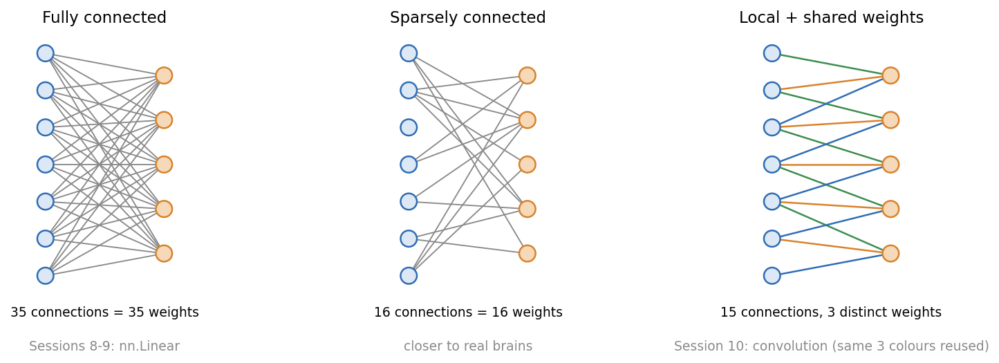
A fully connected layer (nn.Linear) connects every input to every output, so its size grows with the length of the input. The third discussion problem compares it with a convolution, whose number of weights does not depend on the input length at all.
Session 7 introduced the perceptron as Rosenblatt’s simplified neuron. Beyond single units, the analogy with biology becomes loose:
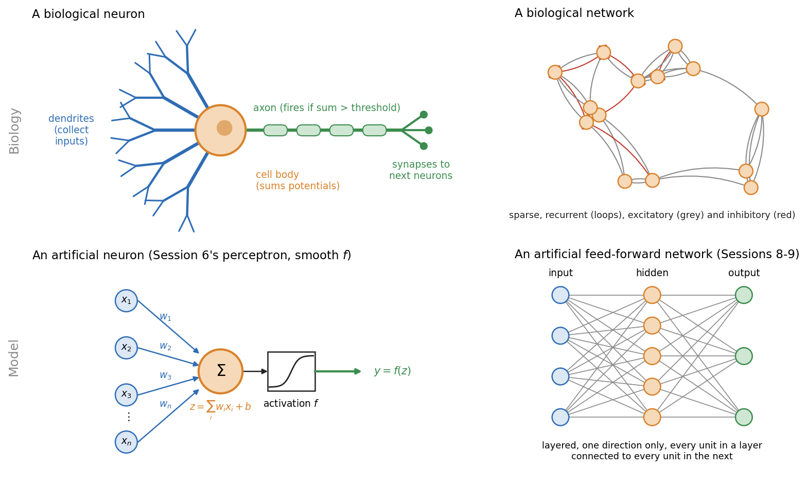
- Real neurons spike. They send discrete pulses over time. Artificial units output a single number.
- Brains are recurrent. Signals loop back. The networks of Sessions 8-10 are strictly feed-forward; Session 11’s recurrent networks bring loops back in a controlled form.
- Brains are sparsely connected. Each neuron connects to a small fraction of the others.
Each architecture in the rest of the course builds a different assumption about the data into its wiring:
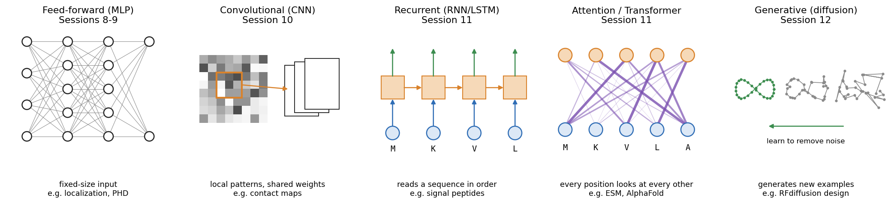
8.4.2 From step functions to trainable activations
In Session 9 we train networks with backpropagation, which is gradient descent (Session 1) applied layer by layer. For that we need the derivative of every unit’s activation function. A step function’s derivative is zero everywhere except at the jump, where it is undefined, so it gives gradient descent nothing to follow. Networks therefore replace the step with functions that have a useful gradient. Sigmoid and tanh are smooth. ReLU has a kink at zero, but its slope is 1 or 0 everywhere else, which is enough for gradient descent. You already met the sigmoid in Section 8.2:
\[ \sigma(z) = \frac{1}{1+e^{-z}} \qquad \tanh(z) = 2\sigma(2z) - 1 \qquad \text{ReLU}(z) = \max(0, z) \]
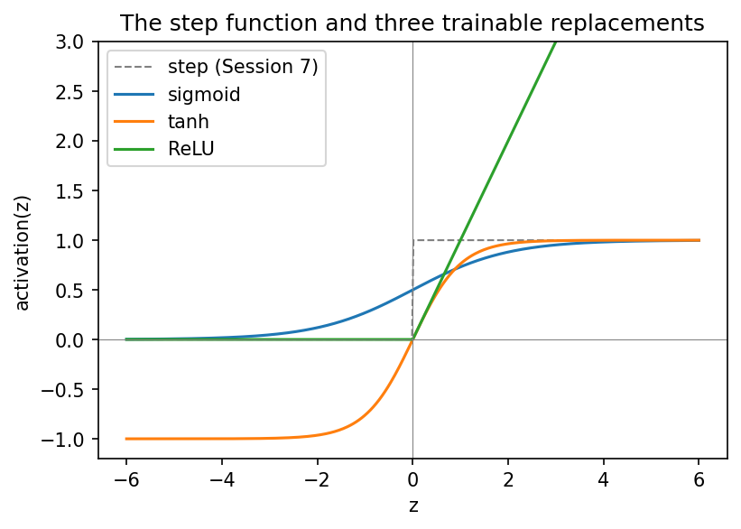
- Sigmoid outputs a value in \((0, 1)\). It remains the standard for a binary output unit.
- tanh has the same S shape but is centred on zero, with outputs in \((-1, 1)\).
- ReLU passes positive values unchanged and sets negative ones to zero. It is cheap to compute and is the default for hidden layers in modern networks.
Why the choice matters in deep networks is part of Session 9’s vanishing-gradient discussion, which compares the derivatives of these functions.
8.4.3 From binary to multi-class: softmax
With more than two classes, a single threshold is not enough. The 3×3 classifier has five outputs and simply picks the largest. Softmax turns \(K\) raw scores (logits) into \(K\) positive numbers that sum to 1:
\[ \text{softmax}(z)_k = \frac{e^{z_k}}{\sum_{j=1}^K e^{z_j}} \]
Take a noisy “horizontal” pattern that the perceptrons misclassify. Its five scores (\(-2.19\), \(-0.80\), \(-2.35\), \(-2.61\), \(0.16\)) become 0.06, 0.24, 0.05, 0.04 and 0.62, with most of the weight on “cross”. Softmax never changes which class wins. It only expresses the relative scores as a normalised distribution. These perceptrons were not trained with cross-entropy, so the numbers sum to 1 but should not be read as reliable probabilities. Training with cross-entropy (Session 9) makes softmax outputs interpretable as probability estimates, but whether they are well calibrated depends on the training and has to be checked on held-out data. For biomedical predictions, where a “90% probability” may drive a decision, that check matters. For two classes, softmax is equivalent to logistic (sigmoid) classification.
Because softmax gives a distribution, its entropy (Session 1) measures how spread out the distribution is. It is 1.56 bits for the example above, against a maximum of \(\log_2 5 \approx 2.32\) bits for a model that cannot tell the five classes apart at all, and 0 bits for a completely confident one. Session 9 trains the network by minimising the cross-entropy between these values and the true labels.
In PyTorch, a classifier’s last layer outputs raw logits. The loss function (nn.CrossEntropyLoss, Session 9) combines log-softmax with the negative log-likelihood in one numerically stable operation, so the model should output raw logits, not softmax values. You apply softmax yourself only when you need normalised scores, for example for a per-class ROC curve.
8.4.3.1 Further reading
- Wikipedia, Neuron, Neural network (machine learning), Activation function, Softmax function
- d2l.ai, Softmax Regression
8.4.4 Practical PyTorch: writing a model as a class
A PyTorch model is a class that inherits from nn.Module. Its layers are attributes created in __init__, and a forward() method describes how an input tensor becomes an output tensor. This is the pattern of Session 2’s Protein class, with super().__init__() and attributes set in __init__, now used for a model, and every later model follows it.
The whole 3×3 classifier is a single nn.Linear(9, 5) layer, with 50 parameters (5 × 9 weights + 5 biases). When the notebook copies the trained perceptron weights into it, the layer makes exactly the same predictions as the NumPy code, because a perceptron layer and nn.Linear do the same computation.
The localisation network is the same pattern at a larger scale: 3000 inputs, a hidden layer of 64 ReLU units, and 5 output logits, for 192,389 parameters. One forward pass on the homology-aware validation set confirms the shapes (105 × 3000 in, 105 × 5 out). With random weights it scores what chance looks like: accuracy 0.181, MCC −0.027 and AUROC 0.474. The network is not trained in this session. Session 9 adds backpropagation and the training loop, and reports the same metrics on this split.
8.5 Check your understanding
8.6 The course notebook
notebooks/session08-ml-foundations-and-pytorch.ipynb computes every number and figure on this page. In order, it covers:
- the helix-fraction regression and the secreted-vs-nuclear logistic regression (both with live data);
- the 3×3 patterns: train/validation/test, confusion matrix, precision/recall/F1/MCC and ROC;
- regression metrics;
- class imbalance, split-to-split noise and cross-validation on the UniProt localisation data;
- MMseqs2 clustering, homology leakage and the homology-aware split. If
mmseqsis not installed, as on Colab, a precomputed clustering is downloaded; - activation functions, softmax, the 3×3 model as an
nn.Linear, and the untrained localisation network.
Open it in Google Colab via the badge at the top of the notebook page to edit and run it yourself.
8.7 The lab
Full lab, on blood-cell images. The lab uses BloodMNIST (Yang et al. 2023), 17,092 microscope images of single blood cells in eight classes (neutrophils, eosinophils, basophils, lymphocytes, monocytes, immature granulocytes, erythroblasts and platelets). The images were taken with an automated analyser at the Hospital Clínic de Barcelona and labelled by clinical pathologists (Acevedo et al. 2020), then shrunk to 28 × 28 colour pixels so that a network trains in seconds on a laptop. The lab uses a fixed subset of 7,000 of them. It was adapted from the previous course’s “Neural Networks” lab, which used handwritten digits (MNIST), and rebuilt in PyTorch. Blood cells make the evaluation questions real ones: the classes are unequal in size, and the mistakes the network makes can be explained by cell biology. At the end of the lab, the same machinery is carried straight back to protein localisation. Work through notebooks/session08-lab.ipynb, replacing every todo(...) call with your own code:
- inspect the class balance, and the accuracy you would get by always guessing the commonest cell type;
- build training, validation and test sets, and standardise the three colour channels using statistics from the training set only;
- write the model as an
nn.Module(28 × 28 × 3 = 2,352 inputs, 10 tanh hidden units, 8 output logits) and count its parameters; - train it with a provided
train_modelfunction (Session 9 opens that box), then turn logits into probabilities and classes; - compute a confusion matrix, and explain its mistakes biologically, then precision, recall, F1, MCC and a ROC curve for immature granulocytes against the rest;
- see how a rare class (basophils, under 7% of the cells) can almost vanish from the predictions without lowering the accuracy much;
- shrink the training set to watch overfitting appear, and use the test set once, at the end.
The last section returns to proteins. It measures how many validation proteins in a random split of this session’s localisation dataset have a homolog in the training set. Together with step 2, it covers two of the three routes for leakage from Section 8.3, namely through the samples (homologs) and through the preprocessing (normalisation statistics).
8.7.1 Submitting this lab
This lab is administered through Canvas, not through this book. See the course’s Canvas page for the current quiz, the deadline and how to submit.
8.8 What’s next
Session 9 trains this network on the homology-aware split. It covers backpropagation, cross-entropy, the training loop, vanishing gradients (including the activation-function derivatives deferred from this session) and regularisation. It closes with Rost & Sander’s PHD method as the payoff of the Session 5-9 arc.